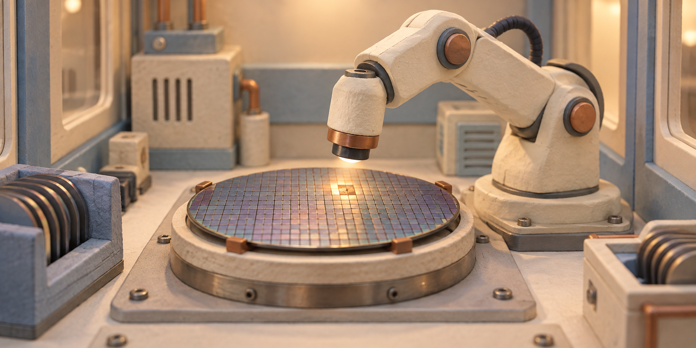

삼성전자, 미스트랄에 투자하고 반도체 불량을 찾는 AI 함께 만든다
삼성전자가 프랑스 AI 기업 미스트랄에 투자하고, 반도체 공장에서 쓸 AI를 함께 개발하기로 했다. 불량으로 의심되는 부분을 찾고 생산 장비의 설정을 개선하는 데 AI를 쓰려는 계획이다. 중요한 제조 자료는 삼성 내부에서 처리한다.

삼성은 돈을 투자하고, 공장에 맞는 AI도 함께 개발한다
두 회사가 협력을 발표한 날은 9월 8일이다. 삼성 반도체 뉴스룸에는 9월 9일 게시됐다. 삼성은 미스트랄의 AI를 자사 반도체 설계와 생산에 맞게 개발할 예정이다. 미스트랄은 글을 읽고 답하는 AI뿐 아니라 기업이 자기 자료로 AI를 만들고 운영하는 도구도 제공하는 회사다. 삼성 공식 발표
투자도 함께 이뤄졌다. 미스트랄은 이번에 여러 투자자로부터 총 30억 유로를 모았다고 밝혔다. 삼성이 투자를 주도했고 유럽의 투자사와 기존 주주들도 참여했다. 따라서 30억 유로는 삼성이 혼자 낸 돈이 아니라 이번 투자자들이 낸 돈을 모두 합친 금액이다. 삼성의 개별 투자액과 확보한 지분율은 두 회사의 이번 발표에 적혀 있지 않다. 미스트랄 투자 발표
이 기사에서 더 눈여겨볼 대목은 투자액보다 AI에 맡기려는 일이다. 예를 들어 검사 사진에서 비슷한 이상이 반복된다면, 그 사진과 당시 장비 기록을 함께 찾아볼 수 있다. 어떤 장비를 거친 제품에서 문제가 몰리는지 좁히는 식이다. 이는 발표에 나온 개발 목표를 이해하기 위한 예시다. 두 회사가 이런 작업의 완성 화면이나 시험 결과를 공개한 단계는 아니다.
이번 발표의 세 가지 내용
투자는 함께하고, AI는 삼성 공장에 맞게 만든다
돈을 모은 일과 앞으로 개발할 일을 나누면 발표의 뜻이 분명해진다.
삼성이 투자를 주도했다. 삼성 혼자 낸 금액은 공개하지 않았다.
미스트랄의 AI를 반도체 설계와 생산에 맞게 함께 개발한다.
외부로 공개하기 어려운 제조 기술과 생산 기록을 내부에서 분석할 계획이다.
작은 불량 하나를 줄이는 일이 중요한 공장이다
반도체 공장을 이해할 때 먼저 떠올릴 물건은 얇고 둥근 원판이다. 이 원판을 웨이퍼라고 한다. 실리콘 같은 재료로 만든 판 위에 여러 개의 작은 반도체 회로를 만들고, 나중에 각각의 칩으로 나눈다. 사진에서 보이는 원판 한 장 전체가 휴대전화에 들어가는 칩 한 개인 것은 아니다. 삼성의 웨이퍼 설명
그 판 위에 회로를 만드는 일은 한 번 찍고 끝나는 작업보다 훨씬 복잡하다. 반도체 장비 회사 ASML은 여러 층의 무늬를 정밀하게 맞춰 쌓는 과정이라고 설명한다. 웨이퍼는 여러 장비를 거치며 수많은 단계를 통과한다. 앞 단계에서 생긴 작은 어긋남이 뒤쪽 검사에서 발견될 수도 있어, 문제를 찾은 위치와 문제를 일으킨 작업을 연결하는 일이 중요하다. ASML의 반도체 제조 설명
회로가 아주 작기 때문에 먼지나 미세한 손상도 제품을 망가뜨릴 수 있다. 공장 직원이 몸을 가리는 작업복을 입고 공기를 깨끗하게 관리하는 이유다. ASML은 제조 공간의 공기와 온도를 엄격하게 관리한다고 설명한다. AI가 검사 자료를 빨리 읽더라도, 실제로 깨끗한 공간과 정밀한 장비를 갖추는 일은 계속 필요하다.
이렇게 만든 칩 가운데 정상 제품이 차지하는 비율을 수율이라고 한다. 예를 들어 칩 100개를 만들었는데 80개가 정상이라면 수율은 80%다. 정상 제품이 90개가 되면 같은 생산 수량에서 팔 수 있는 칩이 10개 늘어난다. 이 숫자는 뜻을 설명하기 위한 예시이며 삼성의 실제 수율은 아니다. 삼성의 수율 설명
수율이 중요한 이유는 원판과 장비를 쓰고 긴 제조 과정을 거친 뒤에도 일부 제품은 판매하지 못하기 때문이다. 불량 원인을 빨리 찾으면 같은 문제를 다음 제품에서 되풀이하는 손실을 줄일 여지가 생긴다. 삼성도 수율에는 기계의 정밀도, 공장의 청결, 제조 조건 등이 함께 영향을 준다고 설명한다. 불량을 찾아내는 일과 애초에 덜 생기게 만드는 일을 연결해야 하는 이유다.
AI가 살필 것은 검사 자료와 장비가 남긴 기록이다
검사 자료에는 어느 부분이 이상한지 단서가 있고, 장비 기록에는 그 제품을 어떤 조건에서 만들었는지 단서가 있다. 미스트랄은 제조업용 AI의 역할로 검사 결과, 센서 측정값, 가동 기록을 함께 분석해 이상과 원인을 찾는 일을 소개한다. 여기서 센서는 온도처럼 장비 주변의 상태를 재는 부품이다. 숫자를 많이 모으는 것보다 같은 제품에 해당하는 기록을 함께 읽는 것이 중요하다. 불량이 어느 날 갑자기 늘어났을 때, 문제가 없던 날의 기록과 빠르게 비교하는 도구가 필요한 이유이기도 하다. 미스트랄의 제조업용 AI 설명
예를 들어 특정 시간에 만든 제품에서 문제가 늘었다고 하자. 제품 검사표만 보면 어느 칩이 불량인지는 알 수 있지만, 왜 그랬는지는 남는다. 여기에 생산 시간과 장비 측정값을 맞춰 보면 그 시간대에 달라진 조건을 찾을 수 있다. AI로 여러 자료를 이어 읽는다는 말을 실제 일로 풀면 이런 장면에 가깝다.
장비의 설정을 개선한다는 말도 같은 흐름으로 이해하면 쉽다. 원인이 의심되는 조건을 찾았다면, 다음에는 어떤 설정을 바꿔 시험할지 후보를 좁힌다. 처음부터 모든 설정을 하나씩 바꾸는 대신 관련 있어 보이는 조건부터 살피려는 것이다. 이 역시 이해를 위한 예시이며, 삼성은 적용할 장비 종류나 변경할 설정의 목록을 아직 공개하지 않았다.
미스트랄의 제조업 소개에는 새 설계를 검토하고 컴퓨터로 예상 결과를 시험하는 일도 포함된다. 실제 제품을 만들기 전에 조건을 바꿔 결과를 계산하는 작업을 시뮬레이션이라고 한다. 설계와 검사, 생산 기록을 함께 참고하면 한 단계에서 찾은 문제를 다른 단계의 개선에 쓸 수 있다는 설명이다. 다만 이 소개에 나온 기능 전체를 삼성 공장에 곧바로 도입한다는 뜻으로 읽을 필요는 없다.
공장 자료를 AI 회사로 보내는 대신, AI를 내부에서 돌린다
이런 분석에는 외부로 보내기 어려운 자료가 들어간다. 제품을 만드는 세부 조건과 장비 기록에는 회사가 축적한 제조 기술이 담길 수 있기 때문이다. 미스트랄은 기업이 자기 자료와 컴퓨터를 통제하면서 AI를 사용할 수 있다는 점을 내세운다. 단순히 어떤 회사의 AI가 더 똑똑한가에 더해, 중요한 자료를 어디에서 처리하는가가 선택 기준이 되는 셈이다.
삼성이 택한 계획은 공장 자료를 내부에서 처리하는 방식이다. 발표에 나온 온프레미스가 바로 이런 뜻이다. 회사가 관리하는 컴퓨터에 AI를 설치해 쓰고, 처리할 자료도 그 안에 두는 방식이다. 직원이 외부 웹사이트에 생산 기록을 올리는 장면보다, 회사 안에 분석 도구를 들여놓는 장면을 생각하면 이해하기 쉽다.
미스트랄은 기업이 AI를 자기 업무에 맞게 바꿀 수 있다는 점도 강조한다. 같은 문서를 읽더라도 공장에서는 장비 이름과 생산 단계, 회사 안에서 쓰는 표현을 알아야 유용한 답을 내놓을 수 있다. 회사 자료에 맞춰 AI를 개발한다는 것은 이런 차이를 반영하는 일이다. 사람이 매번 긴 배경 설명을 붙이는 부담을 줄이려는 목적과도 연결된다.
공장 내부에서 AI를 쓰는 계획
제조 기록도, AI가 분석하는 컴퓨터도 회사 안에 둔다
삼성이 관리하는 내부 컴퓨터·자료
문제를 찾는 데 필요한 기록을 함께 읽는다.
삼성의 반도체 업무에 맞게 개발한다.
문제 지점과 개선할 조건을 찾는 데 쓴다.
온프레미스: 외부 서비스에 자료를 보내기보다, 회사가 관리하는 컴퓨터에 AI를 설치해 사용하는 방식.
반도체 장비 회사에 이어 칩을 만드는 회사도 손잡았다
미스트랄이 반도체 기업과 손잡은 것은 이번이 처음은 아니다. 2025년 9월에는 네덜란드의 ASML이 미스트랄과 장기 협력을 맺고 13억 유로를 투자한다고 발표했다. ASML은 칩의 아주 작은 회로 무늬를 만드는 데 필요한 장비를 공급하는 회사다. 당시 협력 범위에는 제품 개발과 연구, 회사 운영에 AI를 활용하는 일이 들어 있었다. ASML의 2025년 협력 발표
ASML과 삼성은 반도체를 만드는 과정에서 맡은 일이 다르다. ASML이 공장에서 쓸 핵심 장비를 공급한다면, 삼성은 여러 장비를 이용해 실제 칩을 설계하고 생산한다. 장비를 만드는 기업과 장비로 제품을 만드는 기업이 각각 AI 회사와 협력하는 모습이다. 이 차이를 보면 이번 투자가 일반적인 대화형 AI 경쟁과 어디에서 만나는지 이해할 수 있다.
미스트랄은 이번에 모은 자금을 더 강한 AI를 연구하고, AI를 학습시킬 컴퓨터를 늘리는 데 쓰겠다고 밝혔다. 기업용 제품과 해외 사업도 확대할 계획이다. 한국 독자 입장에서는 국내 제조사가 AI 서비스를 구매하는 고객이면서 개발 회사의 투자자도 됐다는 점이 눈에 띈다. 자금과 실제 제조 경험을 연결하는 협력이 이어질 기반을 마련한 셈이다.
불량이 얼마나 줄었는지는 앞으로 확인할 결과다
현재 확인된 것은 투자와 공동 개발 계획이다. 이번 발표에는 AI 도입 뒤 불량이 몇 퍼센트 줄었는지, 새 제품 개발 기간이 며칠 짧아졌는지와 같은 실측 결과가 없다. 특정 공장에서 언제 시험을 시작하고 어느 생산라인까지 적용할지도 자세하게 적혀 있지 않다. 따라서 지금 기사의 중심은 이미 이룬 생산성 향상보다 삼성이 AI에 맡기려는 구체적인 일이다.
AI가 문제를 잘 찾는지도 실제 자료로 확인할 과정이 남아 있다. 가령 정상 제품을 계속 불량으로 표시하면 사람이 다시 확인할 일이 많아진다. 반대로 작은 이상을 놓치면 문제 원인을 늦게 찾을 수 있다. 정확한 분석과 빠른 처리 가운데 하나만 좋아져서는 공장에서 얻는 이익을 판단하기 어렵다. 이는 이번 개발 결과를 볼 때 적용할 수 있는 기본적인 판단이다.
자료를 내부에서 처리한다는 계획도 운영 방법 전체를 설명하지는 않는다. 어떤 직원이 어떤 자료를 읽을 수 있는지, AI가 제안한 설정을 누가 실제 장비에 적용할지는 별도의 문제다. 두 회사는 그 세부 절차를 공개하지 않았다. 내부에 AI를 설치한다는 사실과 장비를 어떤 권한으로 움직이는지는 구분해서 읽는 편이 정확하다.
이번 소식의 핵심은 분명하다. 삼성은 미스트랄에 투자하고, 공장 안의 자료로 반도체 불량과 장비 개선점을 찾는 AI를 함께 만들기로 했다. 좋은 답변을 만드는 능력을 실제 생산의 손실을 줄이는 일에 연결하려는 선택이다. 그 선택의 성과는 앞으로 공개될 공장 시험과 정상 제품의 증가로 드러나게 된다.
확인한 원문
2026년 9월 9일 확인했다. 협력 발표일은 9월 8일이고 삼성 뉴스룸 게시일은 9월 9일이다. 투자·개발 계획은 공식 발표, 제조 원리는 기업의 기술 설명을 참고했다. 실제 생산 효과를 독립적으로 측정한 자료는 이번 발표에서 확인되지 않았다.